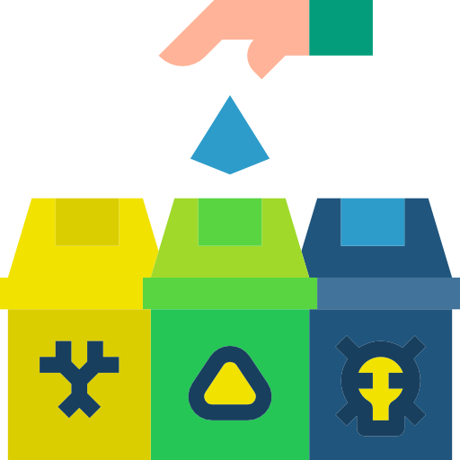

No seu Workspace de lixo temporário, os arquivos ficam recuperáveis por até 21 dias.

Isso significa que, se você excluir um arquivo acidentalmente, poderá recuperá-lo até 21 dias depois. Depois
disso, o arquivo será excluído permanentemente do seu Google Workspace.